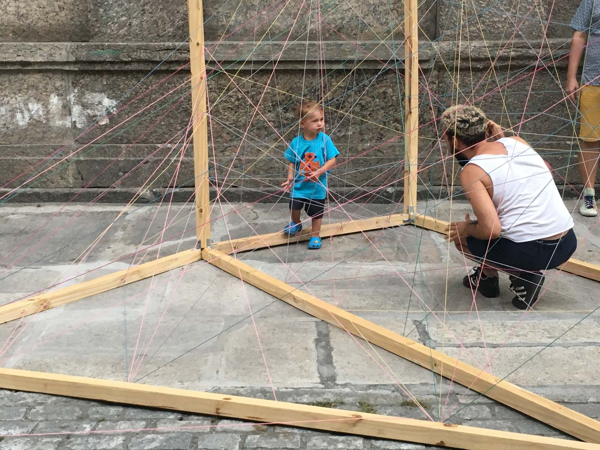
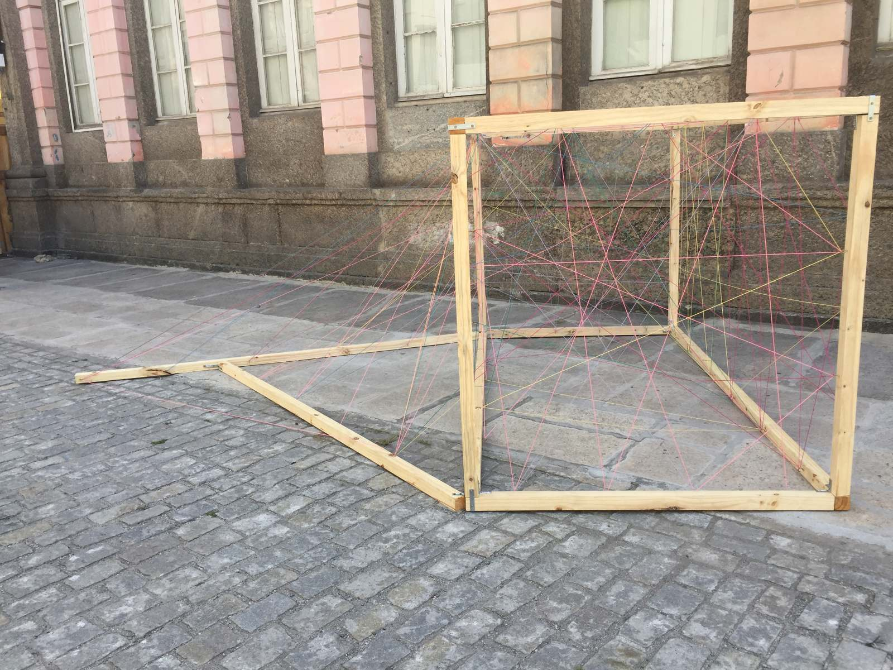
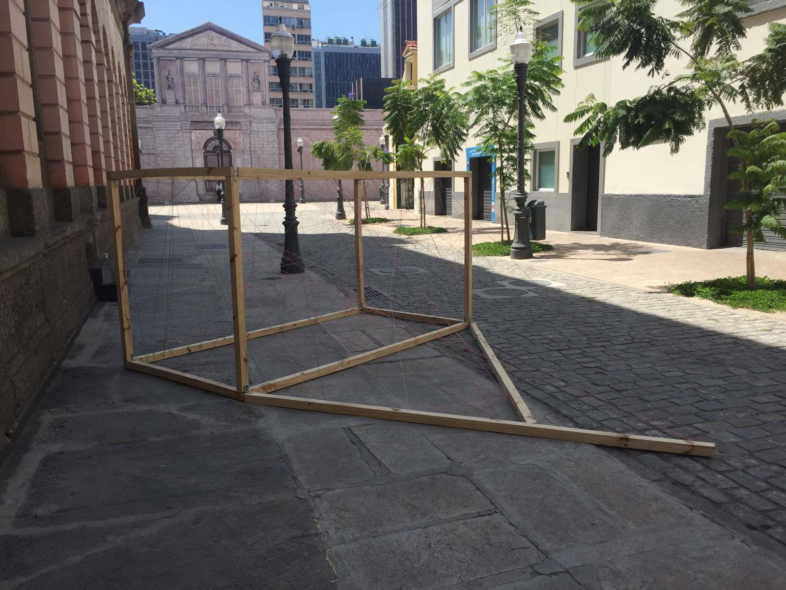
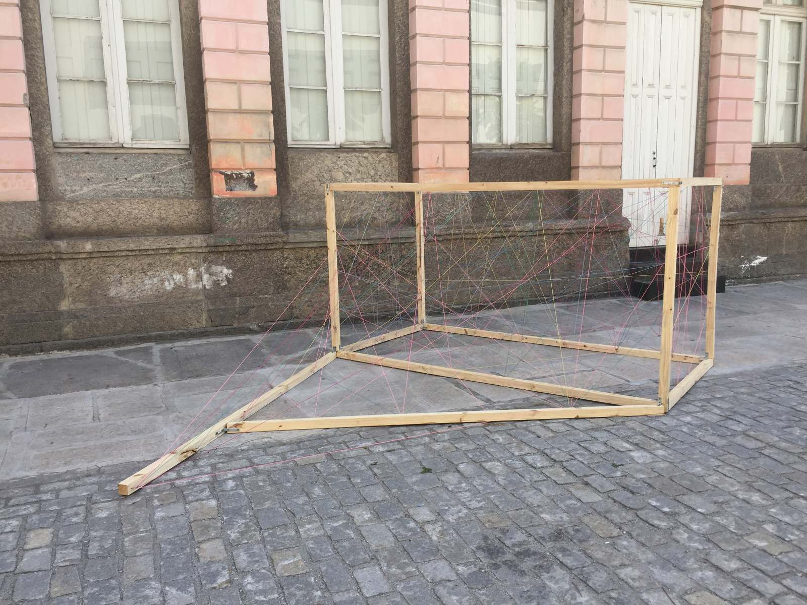

obra oportunista (lugar de criança viada é em cama de gato) opportunistic piece (a cat’s craddle for a forbidden kid)
obra oportunista (lugar de criança viada é em cama de gato)
opportunistic piece (a cat’s craddle for a forbidden kid)
2017
instalação (installation)




ripas de madeira, ganchos de metal, barbantes coloridos (wooden stats, iron hooks, colored cotton strings)
2017. políticas incendiárias. centro municipal de arte hélio oiticica. rio de janeiro.